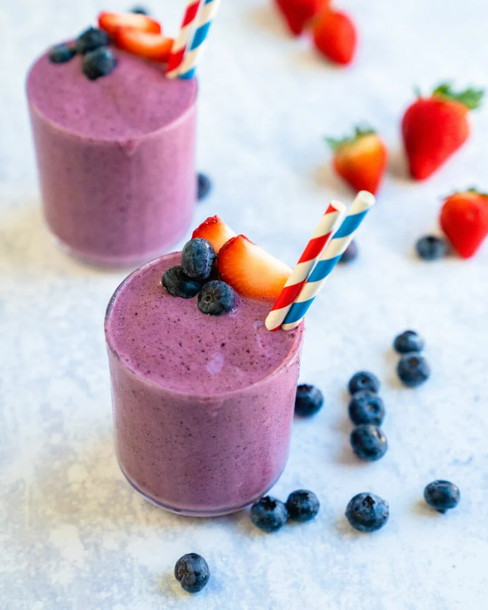

Prep Time: 5 minutes
This strawberry blueberry banana smoothie recipe is the perfect creamy blend of fruity flavors! It's a healthy snack or breakfast made in minutes.
Strawberry
Blueberry
Smoothie
Calories Per Serving
221
Ingredients
- 1/2 cup skim milk (substitute with any nut milk of your choice)
- 1/2 cup of blueberries fresh or frozen
- 1 cup of strawberries fresh or frozen
- 6 ounces of non-fat vanilla yogurt
Direction
- Add milk, blueberries, strawberries and yogurt to a blender
- Mix until smooth! If you are using fresh fruit, you may need to add ice to thicken. Enjoy cold.
Nutrition facts
Strawberries provide fiber, potassium, folate and antioxidants, but they also ccontain several bioactive compounds (called flavonoids) that are known to help protect against chronic diseases